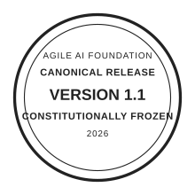

AGILE AI FOUNDATION — CANONICAL STANDARDS AUTHORITY
Agile AI Functional Elements
Version 1.1 · Canonical Release (Archived Snapshot)

This page represents the preserved archive snapshot of Version 1.1. Structural definitions are constitutionally frozen. Governance authority resides exclusively with the Agile AI Foundation.
Light · Dark · System